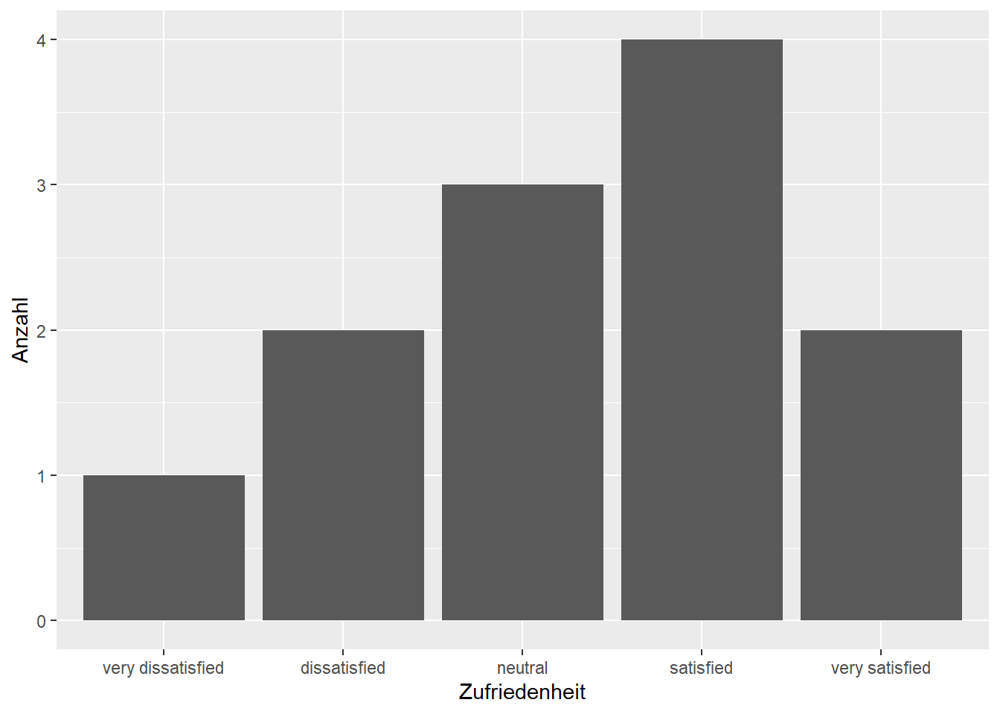

Nachdem ihr gelernt habt, wie ihr Datensätze auf die relevanten Spalten reduziert, widmen wir uns nun der Qualität dieser Spalten. In diesem Kapitel geht es darum, wie ihr bestehende Variablen mit der Funktion mutate() aus dem dplyr-Paket gezielt verändern könnt. Wir zeigen euch, wie ihr Datentypen korrigiert, Text vereinheitlicht und fehlende oder fehlerhafte Werte ersetzt.
Bevor ihr mit euren Daten rechnen, filtern oder visualisieren könnt, müsst ihr sie oft erst in Form bringen, denn die Realität liefert selten perfekte Daten. Spalten haben den falschen Datentyp, Texte sind uneinheitlich geschrieben oder es fehlen Werte. Wer lernt, diese Unsauberkeiten effizient zu beheben, schafft die notwendige Grundlage für alle verlässlichen Analysen und Modelle, die auf diesen Daten aufbauen.
Die folgende Tabelle zeigt die Funktionen, die wir in diesem Abschnitt kennenlernen.
Dieselbe Transformation auf mehrere Spalten anwenden
Beginnen wir mit der rudimentärsten Form der Anpassung: Dem Umbenennen von Spalten.
9.1 Variablen umbenennen
Das Umbenennen von Spalten ist streng genommen keine mutate()-Aufgabe, aber es gehört zum Vorbereiten eines Datensatzes dazu. Wie ihr im Kapitel zu select() gesehen habt (siehe Kapitel 8.3), gibt es dafür die Funktion rename():
Das Muster ist immer neuer_name = alter_name. Alle übrigen Spalten bleiben unverändert.
Wenn ihr viele Spalten auf einmal umbenennen wollt, gibt es auch rename_with(). Damit könnt ihr eine Funktion auf alle (oder ausgewählte) Spaltennamen anwenden. Zum Beispiel alles in Großbuchstaben:
In der Praxis begegnen euch oft Datensätze mit Spaltennamen wie Total Price, Order.ID oder CUSTOMER_NAME. Leerzeichen, Punkte, Großbuchstaben und gemischte Konventionen machen das Arbeiten unnötig umständlich. Das Paket janitor bietet dafür clean_names(), das alle Spaltennamen auf einmal in ein einheitliches Format bringt:
# A tibble: 3 × 3
order_id total_price customer_name
<int> <dbl> <chr>
1 1 9.99 Anna
2 2 19.5 Ben
3 3 4.99 Cleo
clean_names() wandelt alles in snake_case um: Kleinbuchstaben, Unterstriche statt Leerzeichen und Punkte, keine Sonderzeichen. Das ist besonders praktisch, wenn ihr Daten aus Excel oder externen Quellen ladet, bei denen die Spaltennamen nicht für R optimiert sind.
TippNamenskonventionen
Es gibt verschiedene Konventionen, um mehrteilige Namen zu schreiben:
Konvention
Beispiel
Typisch für
snake_case
total_price
R, Python
camelCase
totalPrice
JavaScript, Java
PascalCase
TotalPrice
C#, Klassennamen
kebab-case
total-price
URLs, CSS
dot.case
total.price
Älterer R-Code
In R und im Tidyverse ist snake_case der Standard. clean_names() sorgt dafür, dass eure Spaltennamen automatisch diesem Standard folgen.
9.2 Datentypen umwandeln
Warum ändert man überhaupt den Datentyp einer Spalte? Weil R je nach Typ unterschiedliche Dinge damit machen kann. Eine Zahl, die als Text gespeichert ist, lässt sich nicht addieren. Ein Datum, das als Zeichenkette vorliegt, kann nicht nach Monaten gruppiert werden. Deshalb ist das Umwandeln von Datentypen einer der häufigsten Schritte bei der Datenvorbereitung.
Text in Zahlen
Manchmal kommen Zahlenwerte als Text in euren Datensatz, zum Beispiel weil sie aus einer CSV-Datei falsch geladen wurden. Mit as.double() oder as.integer() wandelt ihr sie um:
Wenn die Umwandlung fehlschlägt, weil der Text keine gültige Zahl enthält, erzeugt R ein NA und gibt eine Warnung aus. Das ist ein nützliches Signal, dass etwas mit den Daten nicht stimmt.
Zahlen in Text
Der umgekehrte Weg funktioniert mit as.character(). Das braucht ihr seltener, aber manchmal wollt ihr eine ID-Spalte, die zufällig nur aus Ziffern besteht, explizit als Text behandeln:
# A tibble: 3 × 1
id
<chr>
1 1642251945732653057
2 1642416819003707397
3 1642082629796216834
Werte in Faktoren
Faktoren sind Rs Art, kategoriale Daten darzustellen, also Spalten mit einer begrenzten Anzahl möglicher Werte. Wenn ihr im Kapitel zur Datenrepräsentation aufgepasst habt, erinnert ihr euch: Faktoren haben ein festes Set von Levels, und die Reihenfolge dieser Levels kann bei Auswertungen und Visualisierungen eine Rolle spielen.
Mit as.factor() wandelt ihr eine Spalte einfach um:
Rows: 58,421
Columns: 1
$ lang <fct> de, en, de, de, qme, de, de, de, de, de, qme, de, de, de, de, de,…
Aber warum ist die Reihenfolge der Levels so wichtig? Schauen wir uns das an einem Beispiel an. Stellt euch vor, ihr habt Umfragedaten mit einer Zufriedenheitsskala:
Abbildung 9.1: Ohne Faktor sortiert R die Kategorien alphabetisch.
“dissatisfied” steht vor “neutral”, “very dissatisfied” steht irgendwo am Ende. Die Reihenfolge hat keinen inhaltlichen Sinn. Jetzt wandeln wir die Spalte in einen geordneten Faktor um:
ggplot(survey, aes(x =satisfaction))+geom_bar()+labs(x ="Zufriedenheit", y ="Anzahl")

Abbildung 9.2: Mit einem geordneten Faktor erscheinen die Kategorien in der richtigen Reihenfolge.
Jetzt stimmt die Reihenfolge: von “very dissatisfied” bis “very satisfied”, genau wie auf einer Likert-Skala. Das ist der Grund, warum Faktoren bei ordinalen Variablen so wichtig sind. Ohne sie verliert ihr die inhaltliche Ordnung.
9.3 Werte umkodieren
Häufig müsst ihr die Werte einer Spalte in andere Werte übersetzen. Vielleicht liegen Kategorien als kryptische Codes vor, oder ihr wollt Wertebereiche zu Gruppen zusammenfassen. Dafür gibt es in R mehrere Werkzeuge.
Einfache Bedingung mit if_else()
Wenn es nur zwei Möglichkeiten gibt, reicht if_else():
# A tibble: 5 × 3
screen_name is_retweet text
<chr> <chr> <chr>
1 cem_oezdemir Retweet "RT @BriHasselmann: Endlich! Wir sind drangeblieben. …
2 W_Schmidt_ Retweet "RT @aakashg0: Twitter revealed its algorithm to the …
3 lisapaus Original "@HassoSuliak @Storch_i @tagesschau Die EU Richtlinie…
4 lisapaus Original "@andiewoerle @svenlehmann Nein, sie werden nicht ver…
5 Wissing Original "\U0001f449 https://t.co/NTFHy7j9AT"
if_else() prüft eine Bedingung und gibt je nach Ergebnis den einen oder den anderen Wert zurück. Hier haben wir die logische Spalte is_retweet (mit den Werten TRUE und FALSE) in lesbare Textlabels umgewandelt. Achtet darauf, dass beide Werte denselben Datentyp haben müssen.
Mehrere Bedingungen mit case_when()
Wenn ihr mehr als zwei Fälle unterscheiden müsst, ist case_when() die richtige Wahl. Es funktioniert wie eine Reihe von “wenn … dann”-Regeln, die der Reihe nach geprüft werden:
# A tibble: 10 × 2
screen_name source
<chr> <chr>
1 cem_oezdemir Mobile (iOS)
2 W_Schmidt_ Mobile (iOS)
3 lisapaus Mobile (iOS)
4 lisapaus Mobile (iOS)
5 Wissing Mobile (iOS)
6 Wissing Mobile (iOS)
7 Wissing Mobile (iOS)
8 c_lindner Web
9 lisapaus Mobile (iOS)
10 lisapaus Mobile (iOS)
Die Reihenfolge ist wichtig: Die erste Bedingung, die zutrifft, gewinnt. .default fängt alles auf, was keine der Bedingungen erfüllt. Ohne .default werden nicht abgedeckte Fälle zu NA.
TippReihenfolge bei case_when()
Prüft die speziellsten Bedingungen zuerst. Wenn ihr retweet_count >= 10 vor retweet_count >= 1000 schreibt, werden alle Tweets mit mehr als 10 Retweets sofort als “medium” eingestuft, und die Bedingung für “viral” wird nie erreicht.
Werte direkt ersetzen mit case_match()
Wenn ihr einzelne Werte direkt in andere übersetzen wollt, ist case_match() besonders übersichtlich. Stellt es euch wie eine Übersetzungstabelle vor:
tweets|>mutate( lang =case_match(lang,"de"~"German","en"~"English","fr"~"French", .default ="Other"))|>select(screen_name, lang)|>head(5)
# A tibble: 5 × 2
screen_name lang
<chr> <chr>
1 cem_oezdemir German
2 W_Schmidt_ English
3 lisapaus German
4 lisapaus German
5 Wissing Other
Der Unterschied zu case_when() ist, dass case_match() direkt Werte vergleicht statt Bedingungen zu prüfen. Das macht den Code kürzer und lesbarer, wenn es um einfache Zuordnungen geht.
Abbildung: Eine zweispaltige Tabelle mit dem Titel “case_match()”. Links steht “Originalwert” mit den Einträgen “de”, “en”, “fr”, “sonstige”. Rechts steht “Neuer Wert” mit den Einträgen “German”, “English”, “French”, “Other”. Pfeile verbinden jeweils linke und rechte Seite. Unter der Tabelle steht ein kurzer R-Code-Schnipsel, der das Muster zeigt.
9.4 Einheiten umrechnen
Manchmal liegen eure Daten in der falschen Einheit vor. Vielleicht sind Preise in Cent statt in Euro, Gewichte in Pfund statt in Kilogramm oder Temperaturen in Fahrenheit statt in Celsius. Solche Umrechnungen sind einfache arithmetische Operationen in mutate():
weather_data<-tibble( city =c("Berlin", "Munich", "Hamburg"), temp_fahrenheit =c(68, 72, 59))weather_data|>mutate(temp_fahrenheit =(temp_fahrenheit-32)*5/9)
# A tibble: 3 × 2
city temp_fahrenheit
<chr> <dbl>
1 Berlin 20
2 Munich 22.2
3 Hamburg 15
Beachtet, dass wir die Spalte hier überschreiben. Der Name temp_fahrenheit passt nach der Umrechnung natürlich nicht mehr. In der Praxis würdet ihr die Spalte gleichzeitig umbenennen oder eine neue Spalte anlegen. Hier überschreiben wir sie der Einfachheit halber.
In echten Datensätzen finden sich immer wieder Tippfehler, uneinheitliche Schreibweisen oder andere kleine Fehler. Stellt euch vor, ihr habt eine Spalte mit Städtenamen, in der “Osnabrück” manchmal als “Osnabrueck” oder “osnabrück” geschrieben wurde. Solche Inkonsistenzen müsst ihr bereinigen, bevor ihr die Daten gruppieren oder filtern könnt.
Einzelne Werte ersetzen
Für gezielte Korrekturen eignet sich case_match(), das ihr schon kennt:
city_data<-tibble( city =c("Berlin", "Muenchen", "berlin", "München", "Berln"))city_data|>mutate( city =case_match(city,"Muenchen"~"München","berlin"~"Berlin","Berln"~"Berlin", .default =city))
# A tibble: 5 × 1
city
<chr>
1 Berlin
2 München
3 Berlin
4 München
5 Berlin
Beachtet das .default = city: Alle Werte, die nicht explizit genannt sind, bleiben unverändert.
Muster ersetzen mit str_replace()
Wenn das Problem systematischer ist, hilft str_replace() aus dem Paket stringr. Damit ersetzt ihr Teilstrings, die einem Muster entsprechen:
str_replace() ersetzt nur das erste Vorkommen. Wenn ihr alle Vorkommen ersetzen wollt, nutzt str_replace_all().
9.6 Fehlende Werte ersetzen
Fehlende Werte (NA) sind in der Datenanalyse unvermeidlich. Manchmal stören sie aber bei Berechnungen oder Visualisierungen. Dann wollt ihr sie durch einen Ersatzwert ersetzen.
replace_na()
Die direkteste Methode ist replace_na() aus dem Paket tidyr:
Manchmal wollt ihr einen fehlenden Wert durch den Wert einer anderen Spalte ersetzen. Dafür gibt es coalesce(). Es nimmt den ersten nicht-fehlenden Wert aus einer Reihe von Spalten:
coalesce() prüft von links nach rechts und nimmt den ersten Wert, der nicht NA ist. Das ist besonders nützlich, wenn ihr mehrere Quellen für denselben Wert habt.
9.7 Text normalisieren
Textdaten sind oft uneinheitlich: Groß- und Kleinschreibung variiert, es gibt überflüssige Leerzeichen oder unerwünschte Sonderzeichen. Bevor ihr Texte analysieren könnt, müsst ihr sie normalisieren. Dafür bietet das Paket stringr eine Reihe von Funktionen.
Groß- und Kleinschreibung
Mit str_to_lower() wandelt ihr alles in Kleinbuchstaben um. Das ist besonders wichtig, wenn ihr später nach Wörtern suchen oder Texte gruppieren wollt:
# A tibble: 3 × 1
text
<chr>
1 rt @brihasselmann: endlich! wir sind drangeblieben. die #tierhaltungskennzeic…
2 rt @aakashg0: twitter revealed its algorithm to the world. but what does it m…
3 @hassosuliak @storch_i @tagesschau die eu richtlinie ist bereits umgesetzt. u…
Daneben gibt es str_to_upper() für Großbuchstaben und str_to_title() für die Großschreibung am Wortanfang.
Leerzeichen bereinigen
str_trim() entfernt Leerzeichen am Anfang und Ende eines Texts. str_squish() geht einen Schritt weiter und fasst auch mehrere Leerzeichen innerhalb eines Texts zu einem einzigen zusammen:
messy_data<-tibble( name =c(" Anna ", "Ben", " Cleo Doe "))messy_data|>mutate(name =str_squish(name))
# A tibble: 3 × 1
name
<chr>
1 Anna
2 Ben
3 Cleo Doe
Sonderzeichen entfernen
Wenn ihr Texte für eine Analyse vorbereiten wollt, kann es sinnvoll sein, Satzzeichen oder andere Sonderzeichen zu entfernen. Dafür nutzt ihr str_remove_all():
# A tibble: 3 × 1
text
<chr>
1 RT BriHasselmann Endlich Wir sind drangeblieben Die Tierhaltungskennzeichnung…
2 RT aakashg0 Twitter revealed its algorithm to the world But what does it mean…
3 HassoSuliak Storchi tagesschau Die EU Richtlinie ist bereits umgesetzt Und es…
Das Muster [[:punct:]] steht für alle gängigen Satzzeichen. Wenn ihr nur bestimmte Zeichen entfernen wollt, gebt sie direkt an, zum Beispiel str_remove_all(text, "#") für Hashtag-Symbole.
9.8 Zahlen runden
Beim Arbeiten mit Dezimalzahlen wollt ihr die Werte manchmal runden, sei es für eine übersichtlichere Ausgabe oder weil Nachkommastellen in eurem Kontext keine Rolle spielen.
Neben round() gibt es floor() (abrunden auf die nächste ganze Zahl) und ceiling() (aufrunden). Diese Funktionen sind nützlich, wenn ihr zum Beispiel Altersangaben aus Geburtsdaten berechnet und immer auf ganze Jahre abrunden wollt.
9.9 Mehrere Variablen ändern
Bisher haben wir immer eine Spalte nach der anderen verändert. Was aber, wenn ihr dieselbe Transformation auf mehrere Spalten gleichzeitig anwenden wollt? Dafür gibt es across().
across() nimmt zwei Argumente: die Spaltenauswahl und die Funktion, die auf jede Spalte angewendet werden soll. Für die Spaltenauswahl könnt ihr die gleichen Helfer nutzen, die ihr von select() kennt:
# A tibble: 3 × 11
id screen_name text retweeted_status_id retweeted_user lang source
<chr> <chr> <chr> <chr> <chr> <chr> <chr>
1 16422519457… cem_oezdem… rt @… 1642158717113081856 brihasselmann de "<a h…
2 16424168190… w_schmidt_ rt @… 1641976869460275201 aakashg0 en "<a h…
3 16420826297… lisapaus @has… <NA> <NA> de "<a h…
# ℹ 4 more variables: insert_timestamp <chr>, in_reply_to_screen_name <chr>,
# in_reply_to_status_id <chr>, quoted_status_id <chr>
Hier haben wir alle Text-Spalten auf einmal in Kleinbuchstaben umgewandelt. Ohne across() müsstet ihr für jede Spalte eine eigene Zeile schreiben.
Tippacross() mit eigenen Funktionen
Wenn eure Transformation komplexer ist, könnt ihr auch eine anonyme Funktion übergeben: across(where(is.numeric), \(x) round(x, 2)) rundet alle numerischen Spalten auf zwei Nachkommastellen.
Abbildung: Ein Datensatz als Tabelle mit fünf Spalten. Drei davon sind farblich hervorgehoben (zum Beispiel alle numerischen). Darunter steht der Code mutate(across(where(is.numeric), round)). Ein Pfeil zeigt von den hervorgehobenen Spalten auf die gleiche Tabelle, in der die Werte dieser drei Spalten gerundet sind. Der Fokus liegt darauf, dass across() die gleiche Funktion auf mehrere Spalten anwendet.
9.10 Kurz zusammengefasst
Mit rename() und rename_with() benennt ihr Spalten um.
mutate() verändert bestehende Spalten, indem ihr den gleichen Spaltennamen links und rechts verwendet.
Werte kodiert ihr mit if_else(), case_when() und case_match() um.
Fehlende Werte ersetzt ihr mit replace_na() oder coalesce().
Text normalisiert ihr mit str_to_lower(), str_trim(), str_squish() und str_remove_all().
Mit across() wendet ihr dieselbe Transformation auf mehrere Spalten gleichzeitig an.
Jetzt wisst ihr, wie ihr bestehende Spalten in Form bringt. Im nächsten Kapitel geht es darum, aus vorhandenen Daten neue Variablen zu berechnen (siehe Kapitel 10).